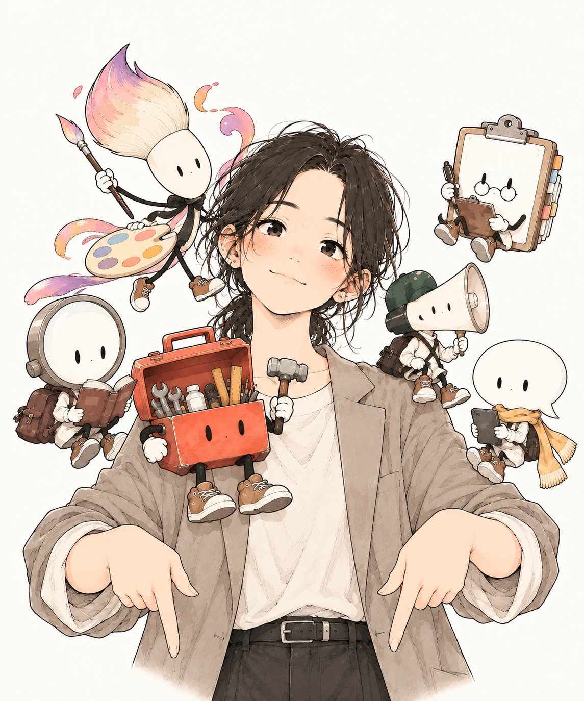
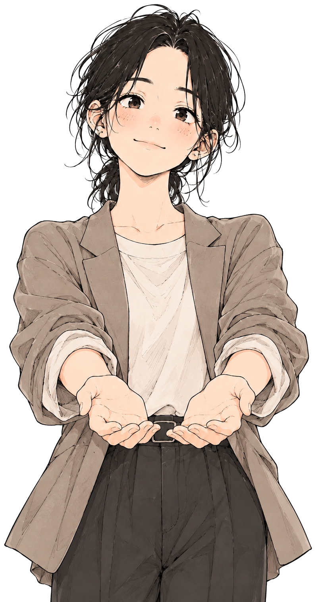

あなたの副業タイプを
12問でチェック
「できるか」よりも、どんなことをしていると楽しいかで答えてみてください。
約2分・登録不要・直感でOK
この診断でわかること
6つのタイプから、あなたのメインタイプとサブタイプを判定。さらに、タイプに合いやすい副業・仕事の方向性を紹介します。
副業適性診断1 / 12
QUESTION 01
迷ったら「今の自分ならどっち？」で直感的に選んでOK。
YOUR RESULT

あなたのメインタイプ
こんな副業・仕事が合いやすい
あなたのサブタイプ
もっと詳しく知りたいなら
LINEで詳細結果を受け取る
登録後におすすめ副業TOP5・具体的な始め方・ロードマップ・学習リソースを表示できる設計です。
※この診断はRIASECを参考に副業選び向けにアレンジした自己理解ツールです。特定の職業への適性・成功を保証するものではありません。